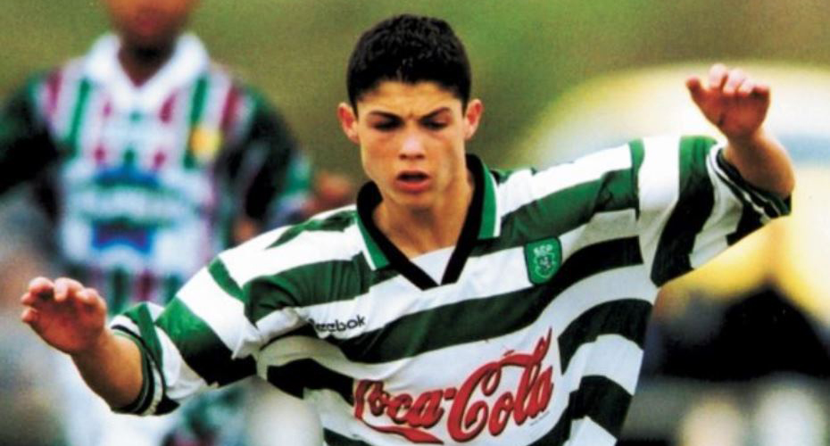
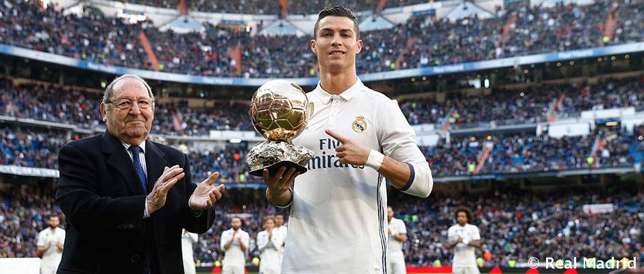
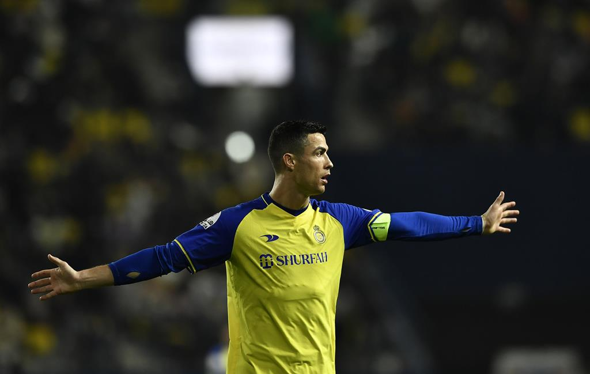

1993 - 2002
O início

Cristiano Ronaldo, nascido em 5 de fevereiro de 1985, é um renomado
jogador de futebol português. Sua carreira começou aos 9 anos de idade
quando estreou no Andorinha, um clube de futebol da Ilha da Madeira.
Com grandes habilidades, logo despertou o interesse do maior clube da
ilha, o Nacional, que o contratou em 1995. No dia 14 de abril de 1997,
Cristiano Ronaldo fez um teste no Sporting Clube de Portugal e, com
apenas 11 anos, ingressou nas categorias de base do clube, onde jogou
no Sub-16, Sub-17 e no Sub-18. Em 13 de Julho de 2002, Ronaldo entrou
como titular da equipe do Sporting. A partir desse dia, disputou mais
de 30 partidas com a equipe e marcou 5 gols.
2009 - 2018
O auge

Este é um assunto aberto a interpretações e opiniões pessoais, mas é
considerado que Ronaldo atingiu o auge de seu desempenho durante sua
passagem pelo Real Madrid, entre os anos de 2009 e 2018. Durante esse
período, Ronaldo conquistou inúmeros títulos importantes, incluindo
quatro Ligas dos Campeões da UEFA e dois Campeonatos Espanhóis, além
de diversos prêmios individuais, como a Bola de Ouro da FIFA. Ele
marcou uma quantidade impressionante de gols e estabeleceu diversos
recordes ao longo de sua carreira, consolidando sua posição como um
dos melhores jogadores de futebol de todos os tempos. No entanto,
mesmo após sair do Real Madrid e se transferir para a Juventus,
Ronaldo continuou a mostrar um desempenho notável e a colecionar
troféus, demonstrando sua habilidade e talento em diferentes fases de
sua carreira.
2021 - 2023
Atualmente

Em 30 de dezembro de 2022, Cristiano Ronaldo foi oficialmente
anunciado como jogador do Al-Nassr, da Arábia Saudita. Seu contrato
vai até 2025, com um salário estimado em 200 milhões de euros por
temporada, tornando-o o jogador de futebol mais bem pago do mundo.
Ronaldo fez seu primeiro jogo oficial pelo Al-Nassr em uma vitória por
1 a 0 contra o Al-Ettifaq, com 22.862 torcedores presentes no estádio
Mrsool Park, em Riade. Em 3 de fevereiro de 2023, Ronaldo marcou seu
primeiro gol em competições pelo Al-Nassr, em uma vitória por 4 a 0
sobre o Al-Wehda, registrando um poker (quatro gols) e alcançando seu
61º hat-trick e nono poker da carreira, atingindo a marca de 500 gols
em competições.